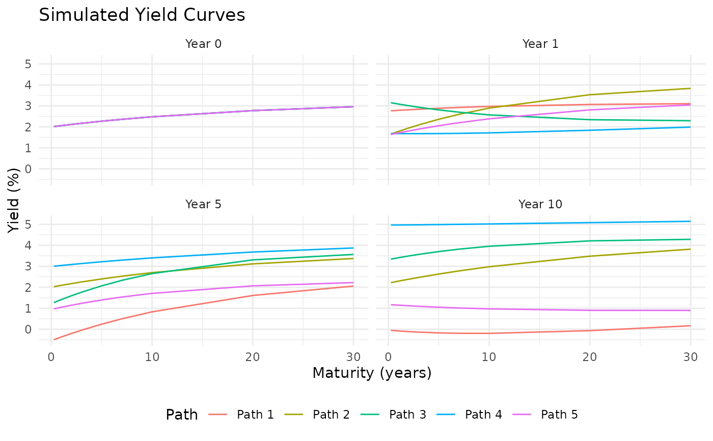

Creates plots of simulated yield curves from a DNS simulation.
Usage
plot_simulated_yields(
sim_result,
time_points = c(0, 1, 5, 10),
path_subset = NULL,
show_forwards = FALSE
)Value
A list of ggplot objects:
yield_curves: Plot of yield curves at specified time points
term_structure: Plot of the term structure evolution (if time_points contains a single value)
forwards: Plot of forward curves (if show_forwards = TRUE)
Examples
params <- list(
kappa = c(0.02, 0.3, 0.5),
theta = c(0.04, -0.02, 0.01),
sigma = c(0.005, 0.01, 0.02)
)
maturities <- c(0.25, 0.5, 1, 2, 3, 5, 7, 10, 20, 30)
sim_result <- simulate_dns_yield_curves(params, c(0.035, -0.015, 0.005),
maturities, n_paths = 50,
engine = "exact", seed = 1)
# Facets follow the calendar, so Year 10 comes after Year 5
plot_simulated_yields(sim_result, time_points = c(0, 1, 5, 10))$yield_curves
